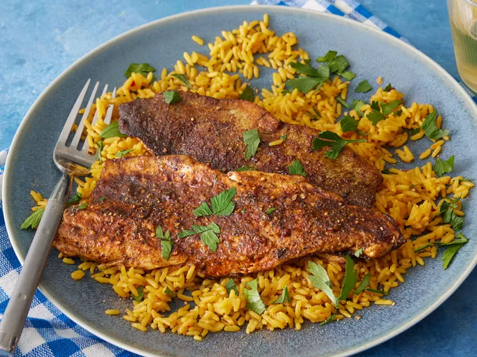

Blackened Fish

Description
This blackened fish is cooked in a hot cast iron pan until charred and
packed with flavor. This recipe calls for trout, but catfish or red
snapper would be equally good. Be sure to have a well-ventilated kitchen!
Blackened fish prepared according to this top-rated recipe is juicy,
flaky, and full of spicy and smoky flavor.
Ingredients
- 1 tablespoon paprika
- 2 teaspoons dry mustard
- 1 teaspoon cayenne pepper
- 1 teaspoon ground cumin
- 1 teaspoon black pepper
- 1 teaspoon white pepper
- 1 teaspoon dried thyme
- 1 teaspoon salt
- 1 cup unsalted butter, melted, divided
- 6 (4 ounce) fillets trout
Steps
- Gather all ingredients.
-
Mix together paprika, dry mustard, cayenne pepper, cumin,
black pepper, white pepper, thyme, and salt in a small bowl.
-
Heat a heavy cast iron pan on high heat until extremely hot, about
10 minutes. While the pan is heating, pour 3/4 cup melted butter
into a shallow dish.
-
Dip each fillet into butter, turning once to coat both sides.
-
Sprinkle both sides of fillets with spice mixture; gently pat
mixture onto fish.
-
Working in batches, place fillets into the hot pan without crowding.
Carefully pour about 1 teaspoon melted butter over each fillet.
Cook until fish has a charred bottom, about 2 minutes. Turn fillets
and spoon about 1 teaspoon melted butter over each.
-
Continue cooking until bottoms are charred, 1 to 2 minutes. Repeat
with remaining fish. Serve and enjoy!